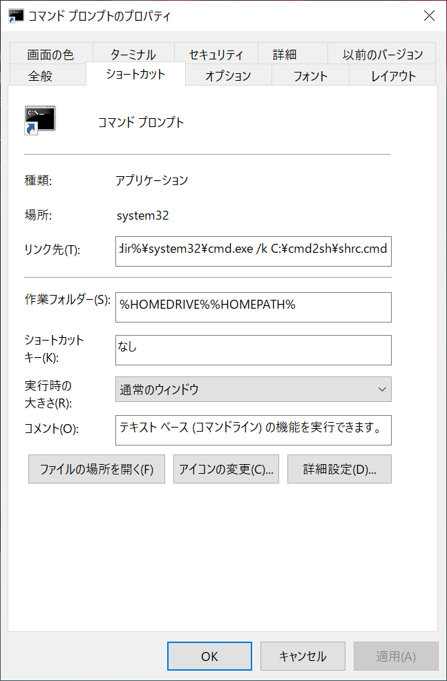

TOC
LinuxやUnixに慣れていると、Windowsのコマンドプロンプトでもついlsとタイプしてしまうことがあります。
コマンドプロンプトにはlsコマンドがないので、以下のようなメッセージが出力されるだけです。
'ls' は、内部コマンドまたは外部コマンド、操作可能なプログラムまたはバッチ ファイルとして認識されていません。
WSLやCygwinなどを使えばLinuxやUnixの環境を構築することは可能です。 しかしここでは、コマンドプロンプトをそのまま利用して、特に頻繁に使ういくつかのLinuxやUnixのコマンドを再現する方法についてまとめます。
doskey Command
コマンドプロンプトにはdoskeyというコマンドが用意されています。
これはLinuxやUnixにおけるaliasコマンドのようなもので、既存のコマンドを組み合わせて新しいコマンドを定義することができます。
これを利用すれば、例えば既存のdirコマンドにlsという別の名称をつけることもできます。
すると、lsコマンドを実行したら内部的にdirコマンドが呼ばれるようになります。
まず、エイリアスの設定を記述した以下のようなファイルを作成します。 ファイル名は何でも良いです。 詳しい構文については公式のドキュメントを参照してください。
cat = type $*
cd = if "$1"=="" (cd %HOMEPATH%) else (cd $*)
clear = cls
cp = copy $*
ifconfig = ipconfig $*
ls = dir /b $*
mv = move $*
open = start $*
pwd = cd $*
rm = del $*
いくつか解説します。
新しく定義したcdコマンドは、引数がなければホームディレクトリに移動し、引数があれば元々のコマンドプロンプトのcdコマンドとして振る舞うようにしています。
このようにした理由は、元々のcdコマンドは引数がないとただカレントディレクトリを出力するという動作をするためです。
また、この元々のcdコマンドの動作を利用して、LinuxやUnixのpwdコマンドを再現しています。
$*が必要ないように思うかもしれませんが、これは出力をパイプやリダイレクトに渡せるようにするためです。
lsコマンドについては、そのままのdirコマンドだと使いにくいので、/bオプションを付けることでよりLinuxやUnixのlsコマンドっぽく動作するようにしています。
続いて、doskeyコマンドを実行してエイリアスの設定を反映します。
/macrofileオプションで先ほど作成したファイルへのパスを指定します。
doskey /macrofile=path¥to¥file
Batch File
doskeyコマンドによるエイリアスの設定にはいくつか不便な点があります。
その内の一つに、doskeyコマンドで定義したコマンドはパイプやリダイレクトから入力を受け取れないという点が挙げられます。
そこで、パイプやリダイレクトから入力を受け取る前提のコマンドについては、バッチファイルで再現します。
バッチファイルとは、一連の命令文を記述したファイルのことで、LinuxやUnixにおけるシェルスクリプトに相当します。 拡張子は.cmdや.batが使われます。 バッチファイルの実行にはコマンドを必要とせず、拡張子を省略したファイル名でそのまま呼び出すことができます。
これを利用すれば、例えばgrepコマンドの動作を記述したバッチファイルにgrep.cmdという名前をつけることで、擬似的にgrepコマンドを再現することができます。
ただし、どこからでも使えるようにするためにはパスを通してやる必要があります。
まず、バッチファイルを作成します。
以下はgrep.cmdの実装例です。
@echo You can use ".*" as any string
@echo.
@findstr /n %*
コマンドプロンプトのfindstrコマンドを利用しています。
正規表現を忘れてしまうことがあるので、echoコマンドでヒントを表示しています。
命令文の前に@を付けることで、命令文をいちいちコンソールに出力しないようにしています。
続いて、先ほど作成したバッチファイルが置いてあるディレクトリにパスを通します。
set PATH=%PATH%path¥to¥dir;
Release
今回作成したファイルはこちらのGitHubリポジトリに置いてあります。
リポジトリには以下のファイルが含まれます。
shrc.cmdには、エイリアス設定を読み込ませてバッチファイルにパスを通すための命令文が記述されています。
- grep.cmd
- macrofile
- shrc.cmd
- wc.cmd
Install
以下の手順に従ってコマンドプロンプトに適用していただけます。
まず、リポジトリからファイルをクローンあるいはzip形式でダウンロードしてください。
続いて、cmd2shディレクトリをルートディレクトリC:¥に移動してください。
他のディレクトリに置いていただくこともできますが、その場合はshrc.cmdのパスを適宜変更してください。
最後に、コマンドプロンプトに設定を読み込ませます。 コマンドプロンプトのショートカット > 右クリック > プロパティ を選択すると以下のようなウィンドウが表示されます。 ショートカットがない場合は、スタート > コマンドプロンプト > ファイルの場所を開く からショートカットが置いてあるディレクトリを開くことができます。 
リンク先の命令文に以下のように/kオプションを追加してください。
リンク先というのはショートカット選択時に実行される命令のことです。
cmdコマンドが実行されることでコマンドプロンプトが新しく起動するようになっています。
/kオプションで起動時に実行する命令文を指定できます。
%windir%\system32\cmd.exe /k C:¥cmd2sh¥shrc.cmd
これで、コマンドプロンプトを起動する度にshrc.cmdを実行させることで、自動でエイリアス設定を読み込むとともにバッチファイルへのパスを通してくれるようになりました。
Uninstall
プロパティ > リンク先 の欄から再度/kオプションを削除することで、設定が自動で読み込まれなくなります。
面倒ですが、doskeyコマンドとsetコマンドを使ってその都度ON/OFFすることもできます。